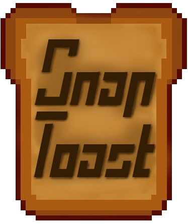

Snaptoast Games

Snaptoast Games is a partnership founded between myself and Triston Laporte.
Together, we're working on Poppy's Island and any other future endeavors, such as the unnamed RPG.
Find out more at www.snaptoast.com
Poppy's Island
Poppy's Island is a visual novel that I'm working on. It features four unique routes, a continuous storyline between paths, and choices with lasting consequences.
This project incorporates coding, writing, composing, marketing, communication between artists, and design.
See more here!
Unnamed RPG
This game in progress hasn't found a suitable name, nor a code name. Despite that, significant work has been made on the game.
A product of Snaptoast Games, this game is a role-playing game with a heavy emphasis on class systems and switching between class mechanics.
Extensive testing has taken place by creating a mock-up of the battle system within RPGMaker, and much of the lore and backstory has been fleshed out as well.
Look forward to updates on this game!